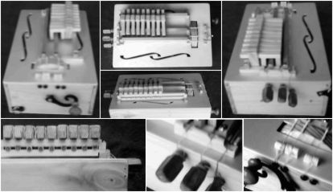
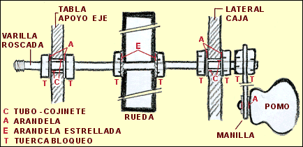
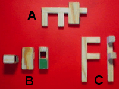
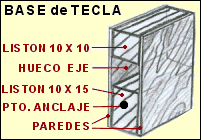
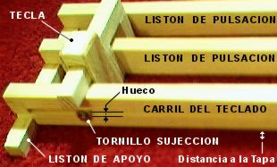
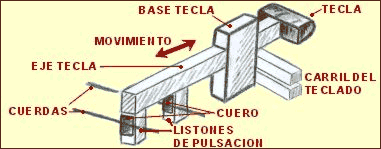
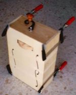
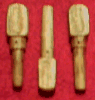

| |
 A
continuación se describe la construcción de un curioso instrumento, que
intenta asimilarse a una zanfoña. Aclarar a los puristas que se trata
de un simple "experimento", por lo que no caben comparaciones
con sus hermanas mayores, si bien el sonido se asemeja y no deja de ser
un buen comienzo o primer paso (muy económico), para iniciarnos en la
construcción de una verdadera. A
continuación se describe la construcción de un curioso instrumento, que
intenta asimilarse a una zanfoña. Aclarar a los puristas que se trata
de un simple "experimento", por lo que no caben comparaciones
con sus hermanas mayores, si bien el sonido se asemeja y no deja de ser
un buen comienzo o primer paso (muy económico), para iniciarnos en la
construcción de una verdadera.
La idea inicial surgió al ver la
página que Dennis
Havlena* tiene publicada en internet. Las medidas, materiales y proceso
de construcción sólo se asemejan al método de Havlena en su idea
básica, ya que por lo demás la construcción se dejo en manos de
la imaginación y del "elemento base" de la que hemos denominado
"ENGENDROFOÑA", que es una caja de madera de las utilizadas para el embalaje de botellas, por lo que el
resto de los elementos se vieron sujetos a sus dimensiones.
 NOTA: Con el nombre de ENGENDROFOÑA no quiero
molestar a nadie, ni por supuesto desprestigiar a la zanfona, sino precisamente
diferenciarla claramente de estas, puesto que en realidad estamos construyendo
algo similar en su base pero a la vez alejado de las reales; por ello
no quiero entrar en discusiones sobre si es bueno o malo, técnicamente
correcto o incorrecto, etc... Tampoco trato de copiar o mejorar la descrita
por Havlena en su pagina, lo que se intenta es dar la idea o pautas básicas
para "investigar" en su construcción por cuenta de cada
uno y con ello llegar a simplificarla o realizar las mejoras que creamos
oportunas; si bien ya que al construirla iba a tener la oportunidad de
fotografiar cada uno de los pasos, mi intención es la de aportar
más información e ideas personales sobre su construcción
que espero os sean de utilidad, teniendo en cuenta que no soy ni músico
ni constructor profesional, con lo que puede que haya muchas cosas que
haga mal, es decir, lo que yo digo ¡NO VA A MISA!. NOTA: Con el nombre de ENGENDROFOÑA no quiero
molestar a nadie, ni por supuesto desprestigiar a la zanfona, sino precisamente
diferenciarla claramente de estas, puesto que en realidad estamos construyendo
algo similar en su base pero a la vez alejado de las reales; por ello
no quiero entrar en discusiones sobre si es bueno o malo, técnicamente
correcto o incorrecto, etc... Tampoco trato de copiar o mejorar la descrita
por Havlena en su pagina, lo que se intenta es dar la idea o pautas básicas
para "investigar" en su construcción por cuenta de cada
uno y con ello llegar a simplificarla o realizar las mejoras que creamos
oportunas; si bien ya que al construirla iba a tener la oportunidad de
fotografiar cada uno de los pasos, mi intención es la de aportar
más información e ideas personales sobre su construcción
que espero os sean de utilidad, teniendo en cuenta que no soy ni músico
ni constructor profesional, con lo que puede que haya muchas cosas que
haga mal, es decir, lo que yo digo ¡NO VA A MISA!.
- Ante todo divirtámonos tanto en su construcción
como tocándola. -
Los materiales utilizados son muy
pocos y en su mayoría "reciclados", por lo que su coste es ínfimo,
unos 25 euros. De igual forma el tiempo empleado en su construcción es
mínimo ( 20 horas más o menos) y pocas las herramientas utilizadas.
Intentare detallar su construcción
paso a paso, adjuntando siempre que sea posible, fotografías y gráficos,
que posiblemente sean los que más te sirvan como orientación,
de todas formas te recomiendo imprimas esta pagina y la leas detalladamente
para hacerte una idea de todos los elementos que componen la ENGENDROFOÑA
y su proceso de construcción; de hecho y para que no tengas problemas
en la impresión he dejado todo el texto y gráficos en la
misma página web.
Si construyes una me gustaría
enviases una foto y algún
comentario sobre mejoras o materiales utilizados, las publicare en en
ESTA PAGINA ANEXA (donde puedes ver otras
construcciones sobre la idea de Havlena).
Si tienes alguna cuestión
o problema que preguntar puedes hacerlo en el FORO
que hemos creado para este instrumento, donde tambien puedes encontra
soluciones técnicas a la afinación, puesta a punto, problemas
más frecuentes, etc.
|
FOTOS
DETALLE
Pincha sobre la de tu interés para ampliarla
|
|

|
|
MATERIALES.-
|
|
|
 CAJA DE MADERA (de las utilizadas
para embalar botellas) - nº. 6 CAJA DE MADERA (de las utilizadas
para embalar botellas) - nº. 6
|
|
RUEDA DE MADERA (en mi caso
realizada con un píe circular de madera, de los
usados como base de figuras decorativas)
CON UN DIAMETRO MINIMO DE 120
mm. - nº. 11
|
|

|
LISTON MADERA 10 x 10 mm - nº. 7
|
|
TUERCAS DE BLOQUEO - nº. 1
|
|
ARANDELAS 6 mm - nº. 2
|
|
PUNTAS CIEGAS (sin cabeza) - nº. 5
|
|
LISTON MADERA 15 x 10 - nº. 8
|
|
BARRA ROSCADA DE 6 mm Diámetro - nº. 10
|
|
ESCUADRA HIERRO (estantería) - nº. 12
|
|
MANILLA MADERA (utilizada en cajones) - nº. 12
|
|
TORNILLOS DE MADERA 25mm - nº. 4
|
|
ARANDELAS DE ESTRELLA (amarre madera) - nº. 3
|
| VARIAS PIEZAS DE MADERA (cajas, listones)- nº.9 |
|
|
|
HERRAMIENTAS y ACCESORIOS.-
|
|
|
MARTILLO
|
COLA BLANCA (de madera)
|
|
|
LIMA MADERA (escofina)
|
ALICATES y LLAVE INGLESA
|
| |
PAPELES de LIJA
|
SIERRA (de marquetería)
|
| |
TALADRO
|
BROCAS para madera |
 |
CONSTRUCCION.-
La realización de la rueda es el paso en el
que tenemos que poner más cuidado, ya que si la rueda no es perfectamente
circular, nuestra "engendrofoña" no sonara bien.
Dando
vueltas y pensando donde conseguir una rueda lo más parecida posible a
la de las zanfoñas y a ser posible con un coste ínfimo, encontré en una
tienda de manualidades un píe circular y de madera, de los utilizados
como base para esculturas, por lo que en sus bordes contaba con "ornamentos".
Los había de varios tamaños, en concreto escogí uno cuyo diámetro era
de 140 mm. de forma que al trabajarlo pudiera llegar a los 120 mm. que
necesitamos para nuestra rueda.
Realice
un taladro en el centro de esta rueda, donde introduje un trozo de la
varilla roscada, que junto a dos arandelas de estrella (de las que tienen
pequeñas muescas en sus bordes) y dos tuercas de bloqueo perfectamente
apretadas, me sirvieron como"eje de broca" que puse en el taladro
vertical de un amigo como puedes ver en la foto inferior (evidentemente
si tienes la suerte de disponer de un torno, todo esto sobra).
Una
vez encendido el taladro, viendo que la rueda estaba lo suficientemente
afianzada y no realizaba movimientos extraños; con limas gruesas fui desbastando
los bordes, hasta conseguir una rueda de 120 mm. de diámetro, con su superficie
exterior lo más plana posible. El grosor de la rueda debe de estar
entre 15 y 20 mm. y sus lados ser lo más perpendiculares al eje,
en mi caso me atrevi a irlos rebajando según se acercaban al borde.
De
todas formas cuando tengamos la rueda montada en la caja, realizaremos
la operación de "afinar" su superficie, dando vueltas a la manivela
y pasando lijas de distinto grano por su borde, así aseguraremos que su
perímetro sea lo más circular posible, a la vez que plana y "suave"
en su superficie. Esta tarea nos puede costar bastante tiempo, pero es
imprescindible conseguir un círculo perfecto.
Desmontaremos la caja de madera, y montaremos
solamente los laterales con cola blanca de carpintero (también
podemos clavarlos). Corte las tablas de los laterales, a fin de estrechar
su forma, quedando sus dimensiones en 340 x 220 x 110 mm., insisto en
que las medidas son orientativas, pudiendo encontrarnos varios tamaños
y medidas de cajas (incluso las que te indico son pequeñas, almenos
en el largo, te recomiendo hagas la caja más larga podrás
colocar más teclas).
 Cortaremos una pieza de madera con la longitud del
ancho de la caja, que utilizaremos como apoyo del eje junto a una
de las tablas que forman el lateral de la misma. A una distancia de 20
mm (ver nota) de lo que será la parte superior de las dos tablas
y en el centro, haremos un taladro de 6mm. (el diámetro de la varilla
roscada) en las dos piezas, que nos servirá como apoyo del eje (VER
FOTO inferior con el eje montado). Con el fin de que los dos taladros
estuviesen idénticamente situados, sujete las dos tablas con unas
sargentas y realice el taladro en las dos a la vez. Cortaremos una pieza de madera con la longitud del
ancho de la caja, que utilizaremos como apoyo del eje junto a una
de las tablas que forman el lateral de la misma. A una distancia de 20
mm (ver nota) de lo que será la parte superior de las dos tablas
y en el centro, haremos un taladro de 6mm. (el diámetro de la varilla
roscada) en las dos piezas, que nos servirá como apoyo del eje (VER
FOTO inferior con el eje montado). Con el fin de que los dos taladros
estuviesen idénticamente situados, sujete las dos tablas con unas
sargentas y realice el taladro en las dos a la vez.
Como la rosca de esta varilla, va a estar en continuo
contacto con la madera, pudiéndola dañar, de forma que con el tiempo el
eje puede descentrarse y "bailar", agrande un poco los agujeros
de 6 mm. e introduje en su interior un pedazo de tubo metálico que conseguí
de un bolígrafo, adaptando su diámetro al de la varilla, de esta forma
el tubo actúa como cojinete, permitiendo más fluidez y protección
al eje. Si además más tarde le pones algo de grasa, te aseguro
que la rueda gira sola.
Nota.- La distancia del eje a la tapa, nos
dará la superficie de rueda que luego vamos a tener sobre la misma
para hacer sonar las cuerdas, quizás sea mejor que la hagas con
menos de 20mm, de esta forma "subirás" las cuerdas, aunque
todo depende de cómo quieras realizar el instrumento, de hecho
en la mía funciona correctamente y no he tenido ningún problema.

La manilla se realizo con
una escuadra de las utilizadas para estanterías (A), cuya forma
se aproxima a la de las zanfoñas. Corte la parte que me interesaba, realice
un taladro de la dimensión del tornillo que sirve para sujetar el pomo
y junto a dos arandelas lo monte (B C), de forma que permitiese
el libre movimiento de este. El pomo lo situé lo más alejado del agujero
del eje (en este caso unos 65 mm).

Para montar el eje y rueda en la caja, pegamos
la pieza de madera que fabricamos anteriormente en el interior de la misma,
de forma que su borde superior quede a ras del de la caja, así
conseguiremos que la tapa pueda apoyarse en esta pieza; corte dicha pieza
de forma que solamente deje la parte de madera necesaria para soportar
la carga del eje, de esta forma rebajamos su superficie y quizas obtengamos
un mejor sonido por parte de la caja de resonancia.
Cortamos un trozo de varilla roscada de longitud suficiente
y colocamos la manilla en un extremo con dos arandelas y tuercas de bloqueo,
apretándolas de tal forma que la manilla quede fija al eje.
En
la parte mas o menos central situamos la rueda, con dos arandelas de estrella
y sus correspondientes tuercas de bloqueo. En el final del eje, también
colocamos tuercas y arandelas de las normales (ver esquema inferior).
La
distancia de la rueda al lateral de la caja, debe de ser tal, que nos
permita más tarde colocar los "enganches" de las cuerdas y sus
correspondientes puentes (en el caso de la caja que he utilizado, 60 mm
al borde más proxímo a la rueda)..
Las
tuercas de bloqueo deben de quedar apretadas pero de forma que el eje
gire sin ninguna traba ni rozamiento.
Ahora
es cuando podemos "afinar" la redondez de la rueda, girando
la manivela y pasando una lima fina y lija muuuy fina por su superficie,
esta tarea nos puede llevar un buen rato, pero es necesario que consigamos
un CIRCULO PERFECTO y de SUPERFICIE TOTALMENTE PLANA (sin rugosidades).

El teclado lo realizaremos
con las varillas de madera y un trozo de contrachapado de 3 mm. de grosor
(en mi caso la caja de vino contaba con dos tablillas a forma de separador
entre botellas, que evidentemente utilice). La zanfoña original de Dennis
Havlena contaba con una sola cuerda cantora, añadiendo más tarde una segunda.
En mi construcción se ponen dos cuerdas cantoras directamente y por lo
tanto cada tecla cuenta con dos "pulsadores" de cuerda.
Es curioso como la pulsación sobre
la cuerda en esta zanfoña se realiza aprisionando la misma sobre un listón
(listón de pulsación), al contrario de las zanfoñas
originales donde las espadillas simplemente pulsan la cuerda, pero según
Dennis Havlena se consigue más sonoridad al aprisionarla sobre un listón,
también tenemos que tener en cuenta que la caja de resonancia que estamos
construyendo no tiene mucho que ver con las originales, por lo que cualquier
ayuda para conseguir más sonido es bien recibida (una vez construida pude
ver, más bien escuchar, el sorprendente volumen de este instrumento).

Cada tecla se compone de una base
y eje pulsador (A = B + C).
En la foto de la izquierda podemos
ver la base de la tecla (B). Esta se compone de dos laterales
(contrachapado de 3mm) que unen dos listones, uno (el inferior - tapado
con fieltro verde) de 150x100 y otro (superior) de 100x100, dejando un
hueco en su medio, que será utilizado para que el eje del pulsador
se deslice por su interior. La parte inferior de esta base será
la que se una al carril portador del teclado, mediante un tornillo de
madera lo suficientemente largo (ver CARRIL). Es importante que el hueco
entre los listones y laterales, sea lo suficiente amplio como para que
el eje de los pulsadores pueda moverse sin problemas pero tampoco quede
holgado. Añadí un pedazo de fieltro a la parte que va a
estar sujeta al carril portador, de esta forma aseguramos una perfecta
unión.
El eje de la tecla (C)
forma una pieza junto a los pulsadores, todo ello lo realizaremos
con listón de 100x100 mm. y el largo que creamos oportuno (en mi
caso 85 mm), cada eje cuenta con dos piezas de madera de 100x100 mm. que
son las encargadas de presionar la cuerda, separadas entre si 20 mm. (que
será la distancia entre las dos cuerdas cantoras), es recomendable
redondear con lija los bordes del listón para que se deslicen mejor
entre los "carriles" de la base de tecla, también es
oportuno colocar un pedazo de cuero en cada pulsador, de forma que sea
este (por su lado más duro) el que apriete la cuerda sobre el listón
de apoyo. Más adelante cuando toquemos nuestra ENGENDROFOÑA
podremos ver que haciendo más o menos grande este pedazo de cuero
podemos afinar aún más cada tecla, este trozo de cuero cumpliría
con la función del giro de las espadillas en una zanfoña.
El alto de los pulsadores será
tal que al estar montados sobre el eje, queden lo suficientemente separados
de la tapa, de forma que no la toquen. Puedes ver el montaje de estas
piezas y la base en el dibujo (más abajo). En esta foto aún
falta por poner la parte correspondiente a la tecla que pulsamos con el
dedo, pero lo dejaremos para el final, cuando tengamos colocadas y sonando
las teclas, de esa forma podemos darle las dimensiones que nos interesen.
En esta foto podemos ver las distintas
partes que configuran el teclado.
Las distancias entre listones no son
las reales, puesto que en esa posición debería de quedar
un espacio entre los pulsadores de la tecla y los listones de pulsación
por donde pasaría la cuerda.
Los dos listones que configuran el carril
del teclado dejan entre medias un hueco para la colocación
de las teclas mediante los tornillos de sujeción.
Debemos observar que los listones de
pulsación y el carril del teclado se sujetan sobre los listones
de apoyo, quedando suspendidos a unos milímetros de distancia
sobre la tapa. |
 |
Los listones de apoyo sirven para colocar sobre ellos el carril
del teclado y los dos listones de pulsación, se sitúan
por lo tanto a los extremos de estos pegandose sobre la tapa, sirven
para que los anteriores no la toquen con lo cual evitaremos vibraciones
indeseadas. En el caso de mi ENGENDROFOÑA tienen 110 mm de largo
y están a la distancia dada por el carril del teclado y los dos
listones de pulsación (230 mm), lo mejor es que veas el
esquema donde se describen las partes y sus medidas (ya sabes que las
medidas son orientativas y debes "rectificarlas" a las dimensiones
que más te interesen). El más cercano a la rueda debemos
colocarlo a una distancia tal que no moleste a esta ni a las cuerdas
y el más alejado de la rueda debe de dejar el espacio suficiente
sobre la tapa para poder colocar sobre ella los puentes de las cuerdas
en su salida hacia las clavijas, la distancia entre los dos es la que deben de tener
el carril del teclado y los listones de pulsación (como ya comente,
en mi caso 230 mm).

Carril del teclado. Su función
a parte de ser el "portador" de las teclas, es la de conseguir
mediante la situación en el mismo de cada base de tecla la nota
adecuada. Para ello contamos con un hueco entre los dos listones que forman
el mismo, de forma que podamos introducir por el un tornillo para madera,
que junto a una arandela sujenten la base de la tecla en su posición,
para ello cuentan a cada lado con un taladro al que daremos una forma
un tanto alargada (ovoide) que servirá para situarlos correctamente
respecto a las cuerdas, pudiendo corregir su distancia a estas mediante
el movimiento que nos permite dicho taladro, ver dibujo.
Listones de pulsación.
Son dos y sirven para que las teclas aprieten, pulsen, cada cuerda sobre
ellos, tienen el mismo largo que el carril del teclado y reposan sobre
los listones de apoyo de forma que no tocan la tapa, deben de tener la
altura suficiente para que la tecla aprisione sobre ellos la cuerda de
forma correcta. También van atornillados a los listones de apoyo,
para ello realizamos un taladro en sus extremos a los que daremos la forma
ovoide ya comentada, forma que nos servirá para poderlos atornillar
correctamente a los listones de apoyo corrigiendo su posición respecto
a las cuerdas (moverlos adelante o atrás,
de forma que la cuerda no quede más separada por un extremo que
por otro).
La tapa superior que será
donde coloquemos los listones de apoyo, etc. la realice con una de las
que traía la caja de vino. Debemos de cortar en ella un rectángulo
que aloje a la rueda, de forma que esta no roce con la tapa, de igual
forma tenemos que hacerla unos boquetes que permitan la sonoridad de
nuestra ENGENDROFOÑA, no puedo dar medidas exactas sobre ellos,
lo deje a la imaginación, en mi caso hice dos "efes"
continuadas en uno de los laterales y otra en el lado contrario, el que
queda debajo de los pulsadores de las teclas. Cuando este terminada la
pegaremos con cola blanca a la caja. Respecto a la tapa inferior,
es mejor esperar tener prácticamente terminado todo el montaje
puesto que por ejemplo en mi caso, a última hora tuve que pegar
un listón en su interior a fin de poder hacer una base sólida
para afianzar las clavijas.
Pegado de los listones portadores
y colocación de los correspondientes al teclado. Una vez tengamos
la tapa superior encolada a la caja pasaremos a pegar los listones portadores,
como comente anteriormente los situaremos a la distancia dada por los
listones del teclado, dejando espacio para colocar los puentes finales
de las cuerdas. Una vez pegados colocaremos los dos listones de pulsación
(debemos de tener en cuenta la situación de las cuerdas), los dos
listones de pulsación están separados entre si 20 mm, una
vez atornillados a los listones de apoyo, colocaremos el listón
portador del teclado, para ello situaremos una tecla de forma que toque
los dos listones de pulsación, es entonces cuando podemos saber
la distancia óptima de colocación del listón portador
del teclado, que también fijaremos al de apoyo con sus correspondientes
tornillos y arandelas.
Montaje de las teclas. Colocaremos
cada una de las teclas atornillandolas al listón portador de forma
tal que en cada posición donde situemos una tecla consigamos una
nota limpia. En nuestra ENGENDROFOÑA las notas sostenidas no tienen
espacio (de momento). De todas formas puedes colocar todas las teclas
que creas oportunas, o te quepan. El eje de las teclas no debe de tocar
el listón portador.
Colocación de las cuerdas.
Las dos cuerdas cantoras van sujetas en el extremo más próximo
a la rueda mediante dos clavos colocados en el lateral junto a la manilla.
Estos clavos los separe dos centímetros uno de otro, centrandolos
perfectamente, de forma que las cuerdas al subir y pasar por los puentes
(cada cuerda tiene uno) quedaran sobre la rueda a una distancia de 20mm.
es necesario colocar otro clavo para el bordón, escoje tu mismo
la distancia.
Fabricaremos los puentes
con pedazos del listón sobrante o algún pedazo de madera,
su altura será tal que no sobrepase la de la rueda sobre la tapa;
en los mismos hice una pequeña muesca, para que la cuerda quedase
apoyada en ese lugar sin posibilidad de moverse al girar la rueda. Cada
cuerda cuenta con dos puentes; el de entrada (cercano a la rueda) y el
de salida hacia las clavijas (en el otro extremo).
Los delanteros (junto a la rueda) deben de ir sueltos, tienen la base
ancha para que asienten mejor; los traseros (junto al clavijero) fijo
el del roncon y sin pegar los de las cantantes, asi los podremos mover
para ajustarlos.
Recomiendo hecheis un vistazo al FORO,
donde se detallan posibles problemas con los puentes y cuerdas.
 El clavijero de mi ENGENDROFOÑA,
lo realice de forma que las clavijas quedaran fuera de la tapa, esto vino
dado por las dimensiones de la caja, resulto un poco pequeña para
colocarlas sobre la misma, así que encole un pedazo de madera dura
dentro de la caja (30 x 30 x 100 mm), colocandolo por dentro en el lateral
contrario al de la rueda (en su parte superior, junto a la tapa). Las
clavijas las hice a navaja en madera dura y termine con escofina
y lija, son cónicas y cuentan con una cabeza que permite girarlas
sobre los taladros que realice a casi 20 mm de la parte superior externa
del lateral correspondiente (VER CROQUIS y fotos), agrande los taladros
con una lima cónica en su parte superior para que se amoldaran
a la forma de las clavijas. Taladre la parte superior del eje de cada
una en su centro con una broca de 2 mm de diámetro, agujero que
sirve para introducir la cuerda, poderla apretar y con ello afinarla.
Las cuerdas. Yo he utilizado
cuerdas de guitarra usadas y un par de cuerdas de tripa donadas por un
buen amigo. En este punto todo el mundo al que he consultado me dijo que
lo mejor es experimentar con varios tipos y grosores. Podemos poner sustituyendo
a las cuerdas de tripa cuerdas de raqueta de tenis, también y según
Havlena el hilo utilizado en máquinas desbrozadoras puede servir,
aunque según me han contado no suena muy bien (al menos el que
encontramos en España).
Afinación de cantoras
y bordón. Según he podido ver, en principio se puede
afinar de dos formas:
- Las cantantes en SOL y el bordón
en DO
- Las cantantes afinadas en SOL y
el bordón en RE
Puedes ver más cuestiones
sobre este tema en el FORO. Las cuerdas las tenemos que afinar
"al aire", sin pulsar ninguna tecla.
Notas de las teclas. Situaremos
cada tecla en el lugar que corresponda a una nota, de forma que consigamos
tener LA SI DO RE MI FA SOL LA SI DO, puedes poner tantas teclas como
la longitud del carril portador del teclado te permita.
Un consejo importante. Después
de terminar mi engendrofoña. Me he dado cuenta que la longitud
dada por la caja de botellas de vino, no es muy adecuada. Si quieres "sacar"
una escala de notas y que estas suenen bien, la caja debe de tener por
lo menos 15 cm. más de largo. En la engendrofoña construida
las notas se empiezan a oír a una distancia de unos 15 cm a la
rueda, las teclas colocadas por debajo de esta distancia, distorsionan.
No te preocupes ya estoy comenzando la construcción de una más
grande y de "verdad" (ZANFONA), cuando la tenga terminada pondré
los planos y demás cuestiones en otra pagina dentro de este portal.
He dado un par de finas capas de
barniz transparente a toda la caja, de esta forma queda protegida
de suciedades, por supuesto las piezas moviles no las barnice.
Una vez terminada la construcción,
pude ver como realmente no hace falta presionar la cuerda contra el listón
de pulsación, sino que con la pulsación de la tecla y su
consiguiente presión sobre la cuerda se produce una nota limpia
y de gran volumen.
Es necesario cubrir la superficie
de la rueda con resina, para ello buscaremos resina pulverizada o
en todo caso con un almirez la machacaremos hasta convertirla en polvo.
Unas 6 u 8 vueltas a la rueda sobre un trozo de trapo con este polvo de
resina serviran, si la rueda quedase muy "cargada" de resina
podemos eliminarla dando unas cuantas vueltas a nuestra manivela y colocando
sobre ella un pedazo de madera, de esta manera rebajaremos la superficie
de rueda resinada.
Debemos colocar algodon sobre
la parte de las cuerdas que esta en contacto con la rueda, para ello daremos
vueltas a la manivela, haciendo girar la rueda; acercaremos un pedazo
de algodon (mejor natural, sin tratar) a la cuerda y dejaremos que esta
lo "pille" o "muerda" hasta consegir que el algodon
la cubra poco más de 1 mm, esta operación al igual que poner
resina a la rueda deberemos de hacerla cuando veamos que la cuerda no
es lo suficientemente frotada por la rueda. (VER FOTO)
Sobre temas de cuerdas, sonoridad,
resina, algodón, rueda, etc... hecha un vistazo en el FORO.
Respectó a sobre como tocar
este "instrumento" lo mejor es que pruebes a hacerlo sonar,
te darás cuenta de la velocidad a la que mover la rueda, presión
de las teclas, etc... de todas formas te recomiendo leas los comentarios
del foro y busques por la red sobre este tema..
NO DESESPERES, al principio,
cuando no esta afinada suena como si estuvieras matando a una manada de
gatos. Es cuestión de PROBAR y PROBAR, te adjunto el consejo
de un amigo sobre este tema: "Al principio suena a rayos, sobre todo
si está desafinada. Intenta afinar una sola cuerda, las zanfonas
tienen unos palitos para separar el resto de las cuerdas que no estén
afinadas, puedes poner uno desde la tapa que separe algo la cuerda de
la rueda. Pon bastante algodón ( yo usaba del normal de farmacia)
y bastante resina, dale vueltas y al principio suena horrible, pero poco
apoco va perdiendo resina hasta que se queda en el punto. Vete quitando
poco a poco algodón hasta conseguir el sonido bueno. Afina aproximadamente,
sepárala y haz lo mismo con las otras cuerdas, una por una. Luego
coloca todas y ajusta la afinación. El proceso es muy pesado y
desesperante, cuesta bastante afinarla la primera vez, luego es sólo
el mantenimiento. No te desanimes, al final se consigue. Animo."
También puedes
ver como otras personas han realizado sus zanfonas sobre la idea de
Havlena.
Bueno y con esto y unas cuantas
cuerdas doy por terminada la primera parte (habrá más),
ahora tenemos el FORO para seguir con el tema y por supuesto la construcción
de una de verdad.
(David González
- Cádiz, enero 2002)
|
|